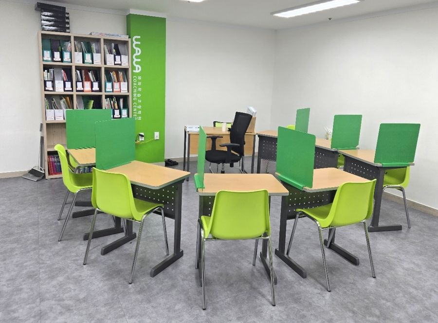

지점 안내
| 주소 | 경기 용인시 처인구 명지로40번길 4 링크 153 502호 와와학습코칭학원 |
|---|---|
| 주변 | 이마트 용인점 인근 |
| 수업 과목 | 영어, 수학 |
| 영어 | 초3,초4,초5,초6,중1,중2,중3,고1,고2 |
| 수학 | 초3,초4,초5,초6,중1,중2,중3,고1,고2 |
| 수업 시간 | 평일 오후 2시 이후 · 주말불가 |

와와 교실 환경 — 지점별 시설과 배치는 다를 수 있습니다.
초등부
초등 고학년은 중학교 내신의 기초를 만드는 시기입니다. 연산, 어휘 같은 기본기를 학기마다 점검하고, 부족하면 학년을 거슬러 올라가 메웁니다. 하루 학습량을 기록하게 해서 공부 습관을 만드는 데 비중을 둡니다.
중등부
중학교부터는 지필고사와 수행평가가 성적을 만듭니다. 시험 4주 전에 과목별 대비 일정표를 만들고, 수행평가 제출물도 학원에서 챙깁니다. 자유학기제 학년은 고교 내신을 내다본 선행과 기본기 보강에 씁니다.
과목별 수업 안내
과목을 선택하면 역북동 기준의 수업 방식과 내신 대비 흐름을 자세히 볼 수 있습니다.
관리 학교
명지대역점에 다니는 학생들의 소속 학교입니다. 학교별 시험 대비 안내는 학교 이름을 눌러 확인하세요.
자주 묻는 질문
상담은 어떻게 신청하나요?
화면의 전화 상담 버튼 또는 상담 신청 페이지로 접수하시면 됩니다. 학생의 학교, 학년, 과목을 알려 주시면 지점 일정에 맞춰 상담 시간을 잡아 드립니다.
수업료는 어떻게 되나요?
학년과 주당 횟수에 따라 다릅니다. 명지대역점 기준 금액은 수강료 안내 표에 있고, 자세한 시간과 횟수는 상담에서 조율합니다.
중간에 등록해도 진도를 따라갈 수 있나요?
개별 진도로 수업하기 때문에 학기 중 등록이 불리하지 않습니다. 첫 주에 진단을 거쳐 학생의 현재 위치에서 시작합니다.